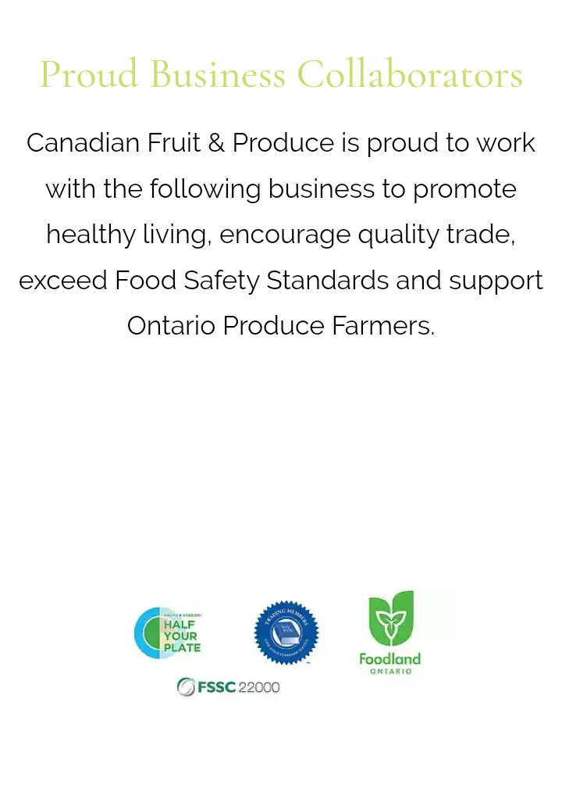

Canadian Fruit & Produce Co Ltd is a third generation family owned and operated wholesale fruit and vegetable company for over 90 years. We have become the leading importer of quality melons, and as our 100th anniversary approaches, we continue to implement technology and food safety practices to keep up with demand of today's consumer. It’s a very exciting time as we look towards the future and know that the fourth generation is currently preparing to join the family business full time. Over the last decade, we have expanded our operation to include our own watermelons and cantaloupes, grown in Ontario! Our labels ship all across Canada in mid to late summer, giving everyone a taste of the good things that grow right here in Ontario. Our buyers and sales staff are extremely knowledgeable in their areas of expertise. They continue to develop their knowledge base and gain experience in all aspects of our business. This directly results in Canadian Fruit's ability to bring quality fruits and vegetable for our customers with competitive pricing
